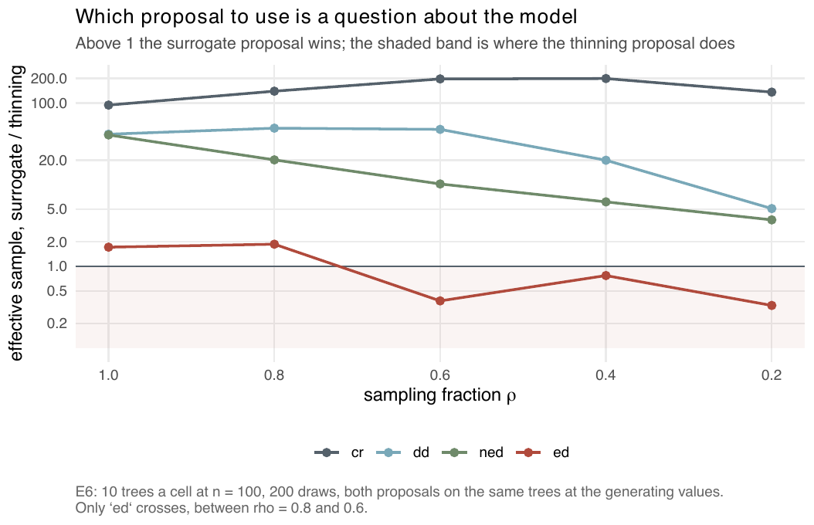
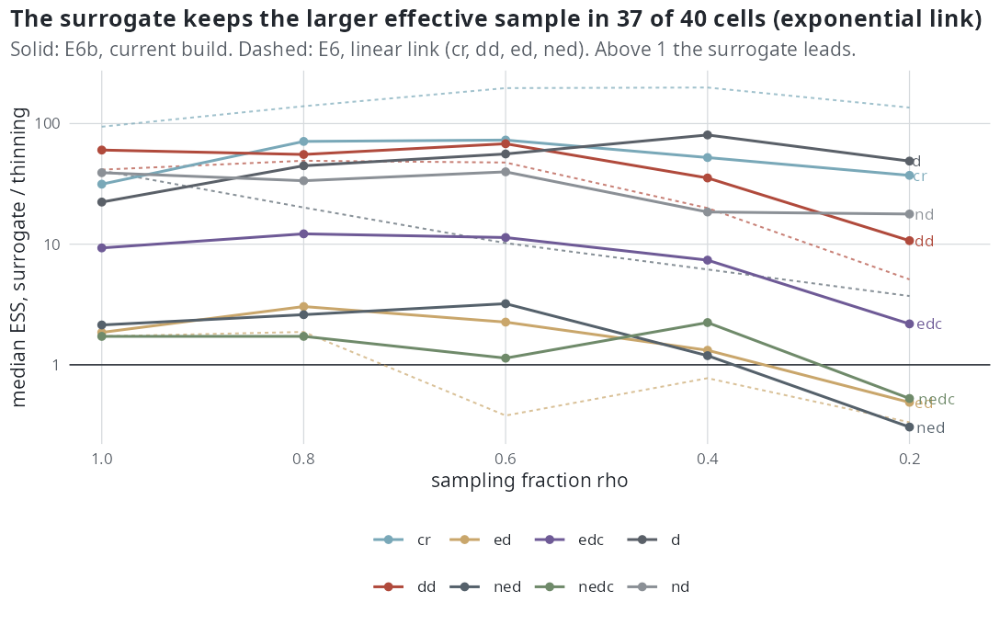

E6 — Which proposal to use, against the sampling fraction
| Status | complete; superseded by E6b (below) where the two differ: the ranking in 3 of the 20 cells (ed at \(\rho\) = 0.6 and 0.4, ned at 0.2) and the level of the ED models' effective sample |
| Package build | a87de1c (by the build audit; identical to a clean build except the random stream through the ned proposals) |
| Driver / analysis | sim/E6-proposal-rho.R; figures sim/figures-e6e10.R, sim/figures-study.R |
| Data | results/E6/proposal-rho.csv (200 rows, no errors), results/E6/design.rds |
Question
The package README said that the choice of proposal does not depend on the sampling fraction \(\rho\). One measurement contradicted it: on a 45-tip ED tree at the generating values the surrogate proposal left an effective sample of 15.1, 1.1 and 1.8 at \(\rho\) = 1, 0.6 and 0.3, against 22.0, 3.7 and 5.9 for the thinning proposal. Either the sentence was wrong or the tree was unrepresentative. E6 measures the ranking of the two proposals across \(\rho\) for four models.
Design
| parameter | value | meaning |
|---|---|---|
| models | cr, dd, ed, ned |
|
| \(\rho\) | 1, 0.8, 0.6, 0.4, 0.2 | the tree is simulated complete and then sampled at \(\rho\) |
| trees | 10 per cell, about 100 tips at \(\rho\) = 1 | capacity calibrated to land the clade near 100 tips at the crown age |
| crown age | 15 | |
| rates | \(\beta\)0 = 0.5, turnover 0.25 (\(\gamma\)0 = 0.125) | |
| ED effect | -0.15 \(\beta\)0 at the clade's own ED scale (ed, ned) |
|
| proposals | surrogate and thinning, on the same trees | |
| parameters | the generating values; no fitting | |
| draws | 200 | |
| link | linear |
Because the trees are sampled after simulation, \(\rho\) and tree size move together for dd and ned (median 92 → 22 tips and 109 → 26 tips from \(\rho\) = 1 to 0.2).
Pre-set rule
Readout: median effective sample per cell, the \(\rho\) at which the ranking crosses per model, and the paired ratio. Decision: either the README sentence is struck and replaced by the measured rule, or it is confirmed and the 45-tip case reported as an outlier.
Results
Medians over 10 trees:
| model | \(\rho\) = 1 | 0.8 | 0.6 | 0.4 | 0.2 |
|---|---|---|---|---|---|
cr ESS surrogate / thinning |
200 / 2.12 | 200 / 1.44 | 200 / 1.02 | 200 / 1.01 | 200 / 1.47 |
dd |
135 / 3.25 | 131 / 2.66 | 105 / 2.21 | 78 / 3.89 | 37 / 7.25 |
ned |
85 / 2.09 | 58 / 2.88 | 21 / 2.08 | 20 / 3.20 | 16 / 4.38 |
ed |
10.7 / 6.20 | 7.4 / 3.97 | 2.35 / 6.20 | 3.55 / 4.58 | 2.54 / 7.60 |
ed: trees on which the surrogate is larger |
6 of 10 | 8 | 2 | 5 | 1 |
The surrogate keeps the draw count on cr at every \(\rho\) (it is the exact conditional law there) and leads by 94-198 times; it leads by 5-49 times on dd and by 41 down to 3.7 times on ned. Only ed crosses: the surrogate is ahead 1.9 times at \(\rho\) = 0.8 and behind 2.6 times at \(\rho\) = 0.6. Hidden lineages per draw (surrogate / thinning) are 42-155 / 86-504 under cr and 56-90 / 74-140 under ed. On ed both proposals are below 10 effective draws at every \(\rho\) below 1.

cr, dd and ned stay above 1 at every sampling fraction; only ed crosses, between \(\rho\) = 0.8 and 0.6.Conclusion
Decision under the rule: the README sentence is struck and replaced by the measured rule — the surrogate proposal is the default, and the exception is ed below \(\rho\) ≈ 0.8. The 45-tip case that led to E6 is an ed-type outcome, not an outlier. Two limits: the samples are measured at the generating values without fitting, so they are best cases (early in a fit the parameters are wrong and the samples smaller); and \(\rho\) is confounded with tree size in the dd and ned rows, so the fall of the surrogate's sample with \(\rho\) there is not separated from the fall in tips. E6b, on the current build and the exponential link, supersedes this conclusion where they differ: ed crosses between \(\rho\) = 0.4 and 0.2, ned crosses at the same place, and the ED models' samples are below 10 effective draws on both proposals in nearly every cell.
E6b: the same question on the current build and the exponential link
| Status | complete |
| Package build | 397bf3f (emphasis 1.0.0) |
| Driver / analysis | sim/E6b-proposal-rho.R, sim/E6b-analysis.R |
| Data | results/E6b/proposal-rho.csv (500 rows, no errors), results/E6b/cells.csv, results/E6b/design.rds, results/E6b/summary.txt |
Question
E6 ran on the linear link, four models, and a build (a87de1c) that predates the ED surrogate commits, the exact ED simulator (f30a791) and the change to the \(D\) likelihood (4e0b9dd). The package now defaults to the exponential link, and the methods paper (s4, the proposals paragraph and the caption of fig:proposals) and the docs site (site/src/index.md, "Supported is not the same as better") quoted E6's ranking; the audit of 2026-10-19 asked for this rerun.
Design
E6's, with the exponential link, the current build, and ten models: cr, dd and the eight lineage-level models.
| parameter | value | meaning |
|---|---|---|
| models | cr, dd, d, nd, ed, ned, edc, nedc, k, nk |
|
| \(\rho\) | 1, 0.8, 0.6, 0.4, 0.2 | simulated complete, sampled by simulate_tree; kept between 50\(\rho\) and 180 tips |
| trees | 10 per cell, about 100 tips at \(\rho\) = 1 | crown age 15 |
| rates, models with \(N\) | \(\lambda_0\) = 0.5, \(\mu_0\) = 0.125, \(\beta_N\) = log(0.25)/K, \(\gamma_N\) = 0 | K bisected to a median clade of 100 tips (141 to 265; nk reached the bracket's end, 1400) |
| rates, models without \(N\) | \(\mu_0\) = 0.25 \(\lambda_0\) | \(\lambda_0\) bisected the same way (0.32 to 0.61) |
| covariate effect | −0.15, speciation only | raw ED: log(0.85)/mean ED at the present (E6's scale); edc, d, k: log(0.85)/sd over the lineages alive at the present (E24's scale) |
| proposals | surrogate (package defaults, where .bdi_supported admits the model) and thinning (.proposal_model(model, "ed"), the ED-aware variant for ED models) |
k, nk: thinning only |
| draws | 200, at the generating values, no fitting | same seed for both proposals |
Pre-set rule
E6's conclusions hold if, in each of E6's 20 (model, ρ) cells (cr, dd, ed, ned), the proposal with the larger median effective sample is the one E6 found (the surrogate everywhere except ed at ρ ≤ 0.6). Every cell where it differs is listed, and the statements in the paper and on the site are rewritten to the measured ranking.
Results
Median effective sample of 200 draws over 10 trees, surrogate / thinning (bold: the cells whose winner differs from E6):
| model | \(\rho\) = 1 | 0.8 | 0.6 | 0.4 | 0.2 |
|---|---|---|---|---|---|
cr |
200 / 6.4 | 200 / 2.8 | 200 / 2.7 | 200 / 3.8 | 200 / 5.4 |
dd |
153 / 2.5 | 158 / 2.9 | 137 / 2.0 | 117 / 3.3 | 88 / 8.3 |
ed |
13.0 / 7.0 | 9.1 / 3.0 | 5.3 / 2.3 | 5.1 / 3.9 | 5.0 / 10.3 |
ned |
7.6 / 3.6 | 6.4 / 2.5 | 5.9 / 1.9 | 4.9 / 4.1 | 1.9 / 6.1 |
edc |
98 / 10.5 | 59 / 4.8 | 27 / 2.4 | 20 / 2.7 | 18 / 8.4 |
nedc |
8.2 / 4.7 | 4.7 / 2.7 | 3.8 / 3.3 | 6.4 / 2.9 | 5.8 / 11.1 |
d |
134 / 6.0 | 127 / 2.8 | 109 / 2.0 | 125 / 1.6 | 125 / 2.6 |
nd |
72 / 1.9 | 97 / 2.9 | 89 / 2.2 | 74 / 4.0 | 74 / 4.2 |
k |
n/a / 3.0 | n/a / 2.1 | n/a / 2.8 | n/a / 2.3 | n/a / 3.7 |
nk |
n/a / 2.5 | n/a / 3.9 | n/a / 1.8 | n/a / 3.2 | n/a / 4.5 |
The winner is E6's in 17 of E6's 20 cells. It differs in three: ed at \(\rho\) = 0.6 and 0.4, where the surrogate now leads (2.3 and 1.3 times), and ned at \(\rho\) = 0.2, where thinning now leads (3.3 times). ed therefore crosses between \(\rho\) = 0.4 and 0.2 (E6: between 0.8 and 0.6), and ned crosses between 0.4 and 0.2 (E6: no crossing). Across the 40 cells with both proposals the surrogate keeps the larger median in 37; the other three are ed, ned and nedc at \(\rho\) = 0.2.
What moved most is not the ranking but the level of the ED models. On ned the surrogate's median at \(\rho\) = 1 is 7.6 (E6: 85), and every ed, ned and nedc cell is below 10 effective draws on both proposals except ed at \(\rho\) = 1 (surrogate 13.0) and the two thinning cells at \(\rho\) = 0.2 (ed 10.3, nedc 11.1): those cells are sampler-limited, and their ranking is a ranking of two unusable samples. The design changes the link and the build together, so the drop is not attributed to either. The surrogate is below 10 in 14 of 40 cells, all of them ED models with raw or centred ED; thinning is below 10 in 47 of 50.
The models E6 did not run: the surrogate leads by 22 to 80 times on d and 18 to 40 times on nd at every \(\rho\), keeping 72 to 134 effective draws where thinning keeps 1.6 to 6.0; on edc it leads by 2.2 to 12 times; k and nk, with no surrogate, keep 1.8 to 4.5 on thinning. The surrogate's mean field converged on every tree. Median seconds per E-step (surrogate / thinning): cr 6.4 / 0.48, dd 3.1 / 0.54, nd 10.0 / 0.58, ned 7.1 / 2.3.

cr, dd, d, nd and edc stay well above 1 at every ρ; ed, ned and nedc sit between 1 and 3.2 down to ρ = 0.4 and fall below 1 at ρ = 0.2, where both proposals are below or near 10 effective draws.Conclusion
The rule is not met in 3 of 20 cells, so E6's conclusions do not hold on the current build and link as stated, and E6b's reading replaces E6's where they differ. Measured at the generating values over the sampling fraction, the surrogate returns all 200 draws under cr at every \(\rho\) and leads by 11 to 68 times on dd, 22 to 80 times on d, 18 to 40 times on nd and 2.2 to 12 times on edc. On ed, ned and nedc it leads by at most 3.2 times down to \(\rho\) = 0.4 and trails at 0.2 (by 2.0, 3.3 and 1.9 times); those three models keep fewer than 10 effective draws of 200 on both proposals in nearly every cell, so their ranking is a ranking of sampler-limited samples. k and nk have no surrogate and keep 1.8 to 4.5 effective draws on thinning. The paper and the docs site state this reading.
Two further readings, not part of the rule. On d and nd the surrogate keeps 18 to 80 times thinning's effective sample at the generating values, while D models default to thinning (E19b's adoption rule, measured before the change to the \(D\) likelihood); E46 refits the 100-tip d and nd cells on both proposals and settles that default. And the samples are best cases, at the generating values and without fitting, as in E6.